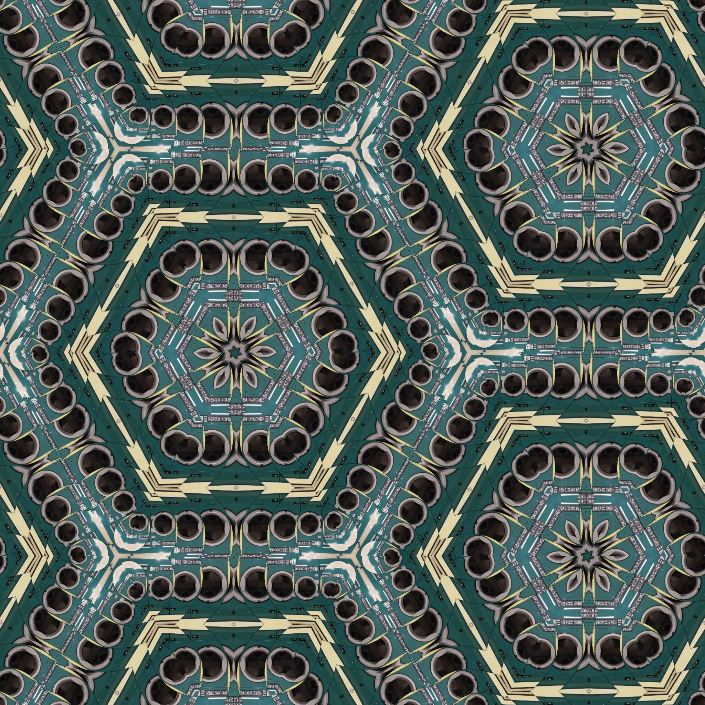

End In Grains
The latest full-lenght album from "Fixed Clouds", recorded in June 2020 and now ready to ship.

Cry For Time III
The album that put "Fixed Clouds" on the map in 2018. Witness the exposure of a new tropospheric standard.

Below & Behind
Political and yet silent. Words are superfluous for this experimental masterpiece.

Rays
How "Fixed Clouds" was born, recorded in isolation in the early 2015.